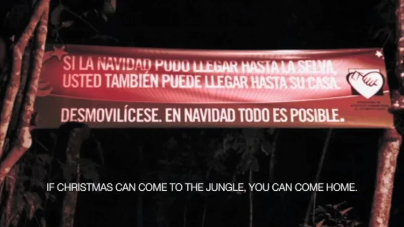
Colombian Ministry of Defence / 2010
Operation Christmas
Watch the trees light up as someone walks past.
The campaign archive / Edition 07 / Edge first

“The best ideas in this edition had no budget to hide behind. That is exactly why they had to be good.”
Edition 06 closed the first season with products. This finale goes to the edges the Index exposed: places outside the UK and North America, and organisations with tiny budgets. Ten cases, chosen to test whether the lessons travel.
10 case studies / 1994 to 2018
Edition 07 / Edge first
Greetings from
the edge of the map.
Wish you were here,
M.
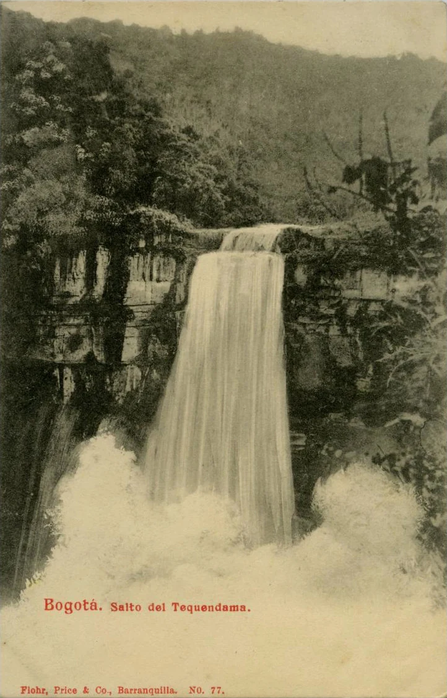
Opening story / Colombia / 2010
In December 2010 Colombia’s government wrapped nine jungle trees in lights that switched on as guerrillas walked past, with a banner: if Christmas can come to the jungle, you can come home.
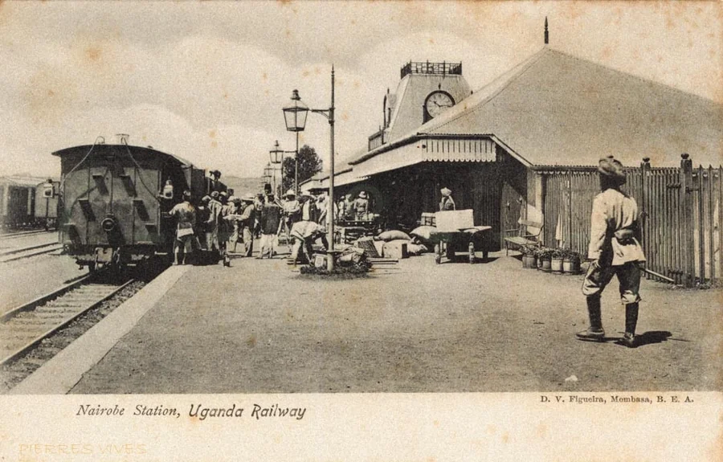
Nairobi Station, Uganda Railway · D. V. Figueira, c. 1900s
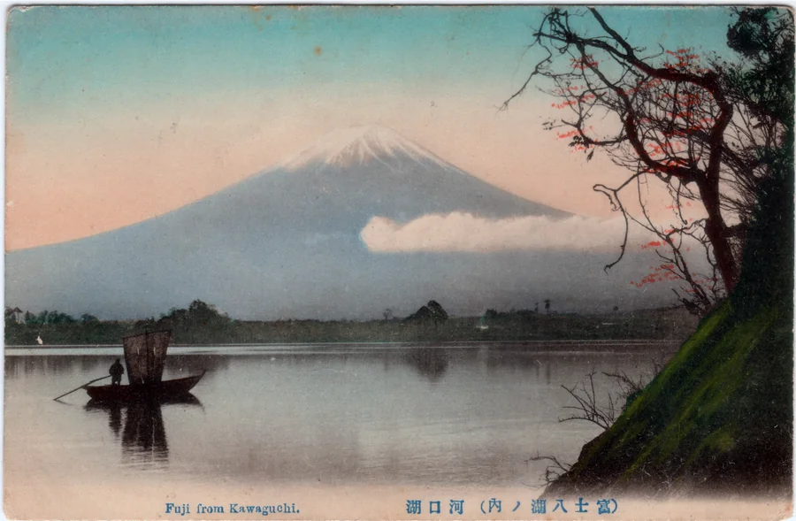
Mount Fuji from Lake Kawaguchi · Postcard sent in 1918
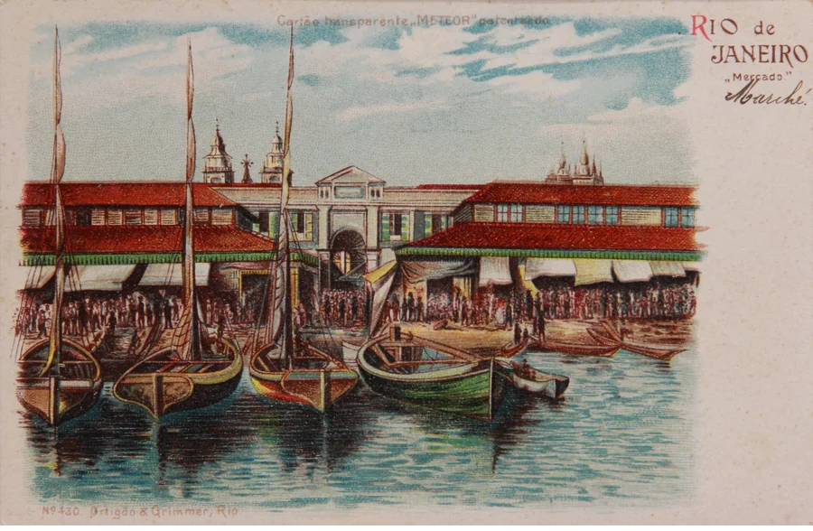
 BRASIL
BRASIL
Rio de Janeiro market · Meteor postcard, 1900
01 / The finding
Three of the ten cases have a modelled effect, a higher share than any edition except Proof first and Data first. They come from a charity with a £100,000 budget, a government at war and a study of a mobile money service. When money is short or lives are at stake, someone has to show the work did its job.
The strongest of them is also the most contested. Operation Christmas has an IPA paper crediting it with 711 demobilisations, and an academic study that found no measurable effect. The small brands, Dollar Shave Club, Blendtec and Oatly, show something else: a strong voice can stand in for a budget, though most of their numbers are their own. Across the series, modelled effects number 1 in Edition 01, 13 in Edition 02, 6 in Edition 03, 2 in Edition 04, none in Edition 05, none in Edition 06 and 3 here.
Ten cases chosen by one curator can’t settle anything. Read this edition as a test of whether the lessons travel, not proof that they do.
Modelled effectSales trendReach only or archival
02 / The patterns
For the first time, every one of the series’ six mechanisms appears in a single edition. The edges use every tool. Choose one to filter the archive.
Stage the benefit so people can see it for themselves.
Say the uncomfortable thing first and make it the point.
Hand the audience a part to play and let them spread it.
Show people a judgement they did not know they held.
Put people in the picture who were missing from it.
Tie the brand to an occasion people already keep.
03 / The screening room
Four films from brand, agency and broadcaster channels. Watch how simple each idea is, and how little it needed to work.

Colombian Ministry of Defence / 2010
Watch the trees light up as someone walks past.
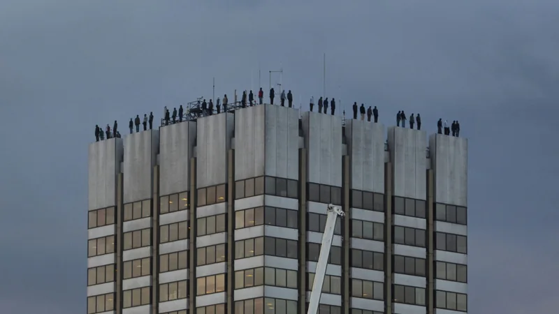
CALM / 2018
The unveiling on live television. Notice how quiet the studio goes.
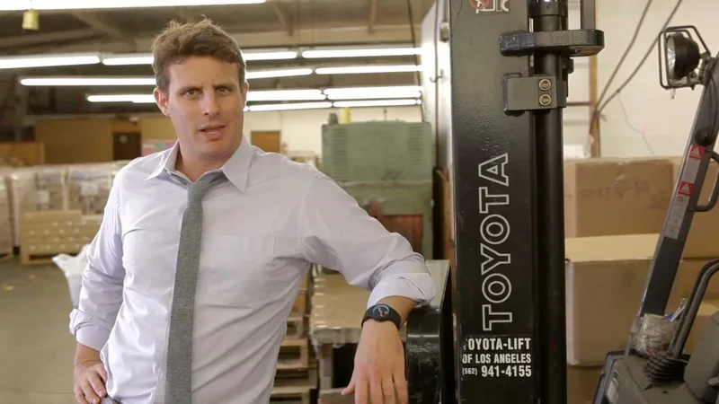
Dollar Shave Club / 2012
One take, one warehouse, one founder. Count the jokes per minute.
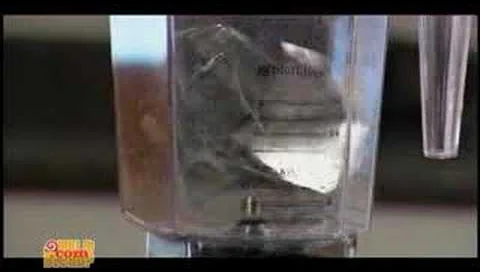
Blendtec / 2006
The question is always the same. That is the brand.
04 / The collection
See each case alongside why it earned a place at the edge. Open each case for the film, my take and how it was measured.
Modelled effectSales trendSurveyReach only or archival
10 campaigns
IPA 2011 · Gold, and IPA 2014 · Silver · Lowe SSP3 and MullenLowe London for the Colombian Ministry of Defence
In December 2010 Lowe SSP3 and the ministry wrapped nine tall trees near jungle paths in lights that switched on as people passed, with a banner: if Christmas can come to the jungle, you can come home. Demobilise.
Find the moment your audience is most open, and speak to the person, not the role.
The most important case in the archive, and the most honest lesson in evidence. An award-winning model and an academic study disagree, and both deserve to be read.
FARC was the oldest guerrilla group in the world. Interviews with former members showed that Christmas was when fighters felt most homesick.
An army spoke to its enemy as people with families. Two more Christmas operations followed in 2011 and 2013.
Lights coming on in the dark as someone walks past. It is a Christmas card that finds you.
The IPA paper credits the operations with 711 demobilisations and estimates the return to the state. A later academic study of almost 20,000 deserters from 2002 to 2017 found no measurable effect of the Christmas campaigns on demobilisation rates. Both are on the record.
The IPA paper estimated demobilisations and the financial return. An independent study later tested the effect against long-run desertion data.
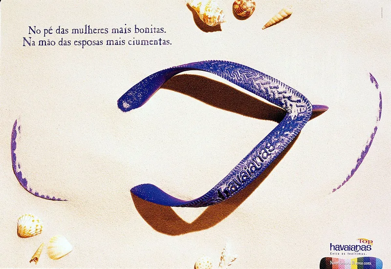
Havaianas / 1994 / Reframed weaknessHavaianas TopBrazil’s cheapest sandal became something people paid double for.Place first · A poor man’s sandal, relaunched as fashion 105mPairs sold in 1999, up from 70m in 1993Alpargatas, 1994
In 1994 Alpargatas launched Havaianas Top, a range in bright single colours at twice the basic price, with advertising featuring young, glamorous Brazilians.
Sometimes the product doesn’t need changing. The story around it does.
Lucozade in Edition 06 did this with a drink. Havaianas did it with the cheapest thing a Brazilian could wear.
Image: Havaianas print advertising · Eugênio Mohallem’s portfolio
Havaianas were rubber flip-flops seen as footwear for people who couldn’t afford shoes. Sales had been falling since the late 1980s.
The same rubber sandal became a badge of Brazilian style, and later a global fashion brand.
A flip-flop on a fashion shoot, in colours that looked like Brazil.
Unit sales rose sharply after the relaunch, and international growth followed from 2000. Sources differ on the exact figures, and the product, price and advertising all changed together.
The record is reported unit sales before and after the relaunch.
Blendtec, 2006
Founder Tom Dickson, in a lab coat, blended marbles, rakes and later an iPhone, asking each time: will it blend?
If your product does something extraordinary, film it doing that.
Sony’s balls in Edition 01 cost a fortune. This cost about $50 and did the same job: show the product being brilliant.
Image: Blendtec, Will It Blend? iPhone (2007) · original film still
Blendtec made powerful blenders for kitchens and businesses, with almost no consumer marketing budget.
A product test became entertainment, and a small manufacturer became famous online.
The smoke when the iPhone goes in, and the founder’s calm voice.
The sales figure comes from the company and is repeated in trade write-ups with different timeframes. Treat it as self-reported.
There is no independent record, only the company’s reported sales.
Safaricom and Vodafone, 2007
In March 2007 Safaricom launched M-Pesa, developed with Vodafone, so people could store and send money by text, cashing in and out at local agents.
The most powerful brand idea can be a service people couldn’t live without.
Product first would have claimed this one. I put it here because the turning point is the place: a service built for how Kenyans actually live.
Image: Early M-Pesa transaction photograph (2008) · Vodafone archive
Many Kenyans could use a mobile phone but had no bank account. Sending money home meant carrying cash or trusting a bus driver.
A phone network became the way a country handles money.
Green agent kiosks on every corner, doing what banks never did.
Economists used the uneven spread of M-Pesa agents as a natural experiment and estimated that access lifted 194,000 households out of poverty, with the biggest gains for households headed by women. It measures the product’s effect on lives, not the marketing.
Researchers compared households with and without nearby agents between 2008 and 2010.
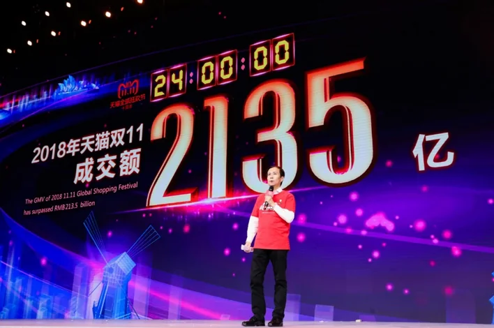
Alibaba / 2009 / Owning a momentSingles’ DayA brand turned a joke about being single into the world’s biggest shopping day.Place first · A shopping day a brand invented 52m yuanSales on the first Singles’ DayAlibaba, 2009
In 2009 Daniel Zhang’s team ran a one-day sale on 11.11 with 27 merchants.
If no moment fits your brand, make one people want to keep.
Edition 02 had KitKat owning the tea break. This is the same move at a scale nobody could have imagined in 1958.
Image: 2018 Global Shopping Festival stage · Alibaba Japan press archive
11 November was an informal ‘singles’ day’ among Chinese students. Alibaba’s Taobao Mall wanted a reason to shop between the autumn holidays and the new year.
Alibaba didn’t just join a moment, it created one, and owned it.
A date that looks like four people standing alone.
The growth is reported in Alibaba’s own figures and the press. It shows the festival’s scale, not what any single campaign added.
The record is Alibaba’s announced sales each year.
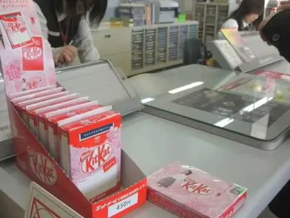
KitKat / 2009 / ParticipationKitto KatsuIn Japan, KitKat sounds like ‘you will surely win’.Place first · A chocolate bar given a job by a culture 20,000Post offices selling Kit Mail · legacy factNestlé Japan and Japan Post · J. Walter Thompson Japan
Nestlé Japan leaned in. In 2009, with Japan Post and J. Walter Thompson Japan, it launched Kit Mail: KitKats that could be posted from around 20,000 post offices, with space for a message.
Listen to what people already do with your product, then make it easier.
The brand didn’t invent this. Students did. The smart part was Nestlé noticing, and having the humility to follow.
Image: Nestlé Japan and JWT Tokyo, Kit Kat Mail (2009) · case-film still
Japanese students noticed that KitKat sounds like ‘kitto katsu’, roughly ‘you will surely win’, and began giving the bars as good-luck charms before exams. Sales rose every January.
A chocolate bar became a token of encouragement, sent through the post.
A chocolate bar with a handwritten note, arriving the week of an exam.
The exam-season sales rise is widely reported, and an earlier ‘lucky charm’ promotion won an Asian marketing effectiveness award in 2005. No public figure isolates the effect of Kit Mail.
There is no published effectiveness record for Kit Mail, only awards and reports of the sales pattern.
Dollar Shave Club, 2012
Founder Michael Dubin starred in a deadpan launch video for a razor subscription, walking through a warehouse explaining why paying more is pointless.
If you can’t outspend the leader, out-talk them.
Ninety seconds that every challenger brand has tried to copy since. Few did it with this much confidence.
Image: Dollar Shave Club, Our Blades Are F***ing Great (2012) · original film still
Razor blades were expensive, locked in cabinets and sold by giants such as Gillette.
A start-up with no ad budget made the category leader look overpriced.
A founder who talks to the camera like a friend who has had enough.
The orders and the sale are widely reported. They show the video started a business. They don’t separate the video from the subscription model and the price.
The record is early orders and the later acquisition.
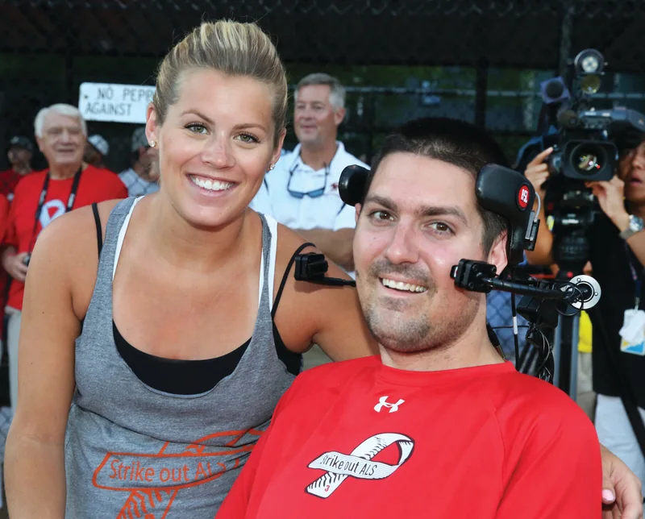
ALS Association / 2014 / ParticipationThe Ice Bucket ChallengeA bucket of ice water that raised over $100m for a rare disease.Small first · A challenge passed between friends $115mRaised for the ALS Association in 2014ALS Association, 2014
In summer 2014 people filmed themselves pouring ice water over their heads, named friends to do the same and asked for donations. People living with ALS and their friends helped it spread.
Give people a part to play that is easy, visible and fun to pass on.
Nobody at the charity designed this, and that’s the point. The best participation ideas belong to the people doing them.
Image: Pete Frates · The ALS Association’s history of the Ice Bucket Challenge
ALS, motor neurone disease, was little known and underfunded.
A charity’s cause became a summer ritual for millions.
The gasp. Everyone knows the sound of ice water hitting someone’s head.
The money raised is well recorded, and part of it funded research that identified a gene linked to ALS. The ALS Association itself called that discovery significant but not a breakthrough.
The record is donations during and after the challenge.
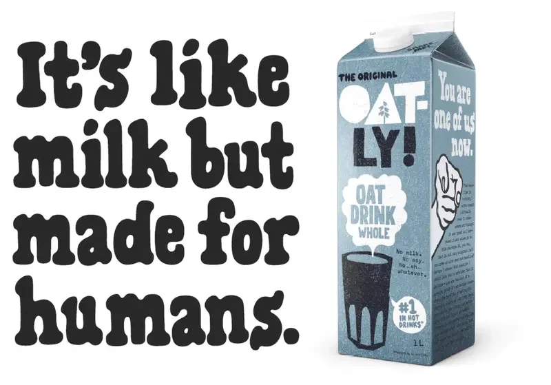
Oatly / 2014 / Exposing an assumptionLike Milk, but Made for HumansA small oat drink brand got sued, and published the lawsuit.Both · A small Swedish brand sued by the dairy lobby 2014The year Sweden’s dairy lobby sued · legacy factOatly, 2014
Under chief executive Toni Petersson, Oatly wrote packaging and ads that talked like a person and teased the dairy industry. Sweden’s dairy lobby sued over lines such as ‘like milk, but made for humans’.
A small brand’s strongest asset can be a big enemy.
Edition 05 is full of brands that picked a fight and lost. Oatly lost the court case and won the argument.
Image: Oatly, Like Milk, but Made for Humans · Forsman & Bodenfors campaign archive
Oatly was a small Swedish company selling oat drinks to a niche of health and lactose-free shoppers.
Oatly lost the case and turned it into publicity, publishing the lawsuit. The attack made the small brand look brave.
Packaging that reads like a letter from a slightly cheeky friend.
Bloomberg reported that Oatly’s sales grew significantly after the lawsuit was filed. No public figure isolates the effect, and the line was later restricted by regulators in some markets.
The record is press reports of sales after the lawsuit.
IPA 2020 · Bronze · adam&eveDDB for CALM
The Campaign Against Living Miserably and adam&eveDDB placed 84 life-size figures by the artist Mark Jenkins on the rooftops of ITV’s South Bank studios in March 2018, with This Morning as a partner.
A single image, placed where people can’t ignore it, can do what a campaign budget can’t.
The strongest proof in this edition came from the smallest budget. When it matters this much, someone makes sure it is measured.
Suicide was the biggest killer of men under 45 in the UK, and the silence around it was making it worse.
An image, not an ad, broke the silence. The UK appointed its first minister for suicide prevention later that year.
Figures standing at the edge of a roof, seen from the street. You look up, and then you understand.
The IPA paper estimates 283 suicides prevented and a social payback of £5,119 for every £1, on a total budget of £100,000. Estimates of this kind rest on modelling assumptions, and the paper sets them out.
The IPA paper modelled the social value of suicides prevented against the cost of the work.
No campaigns match. Try clearing the search or setting a filter back to All.
05 / The evidence
Work from outside the UK and North America has the thinnest public record, because the richest effectiveness archive is British. Two of these five have strong evidence: an IPA paper and a peer-reviewed study.
Small organisations rarely publish effectiveness papers. CALM is the exception. The others offer orders, donations or sales figures they reported themselves, and the case says so.
Operation Christmas has an award-winning model and an academic study that disagree. I rate the published model, and I show the challenge beside it. Readers should see both.
M-Pesa is a service, not a campaign, and its study measures its effect on lives, not on marketing. It is here because the turning point is the place it was built for.
Every case gets one of five ratings, strongest first: modelled effect, sales trend, survey, reach only and archival. Here orders and money raised count as trends. A fact such as the year of a lawsuit is marked so it isn’t read as a result.
Each case had to fill a gap the Index names, reach real cultural significance and have a public record. Films come from brand, agency or broadcaster channels, and where none exists the case says so.
06 / The finale